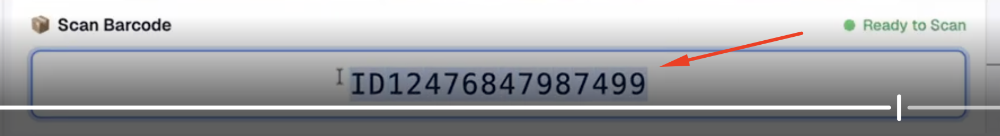
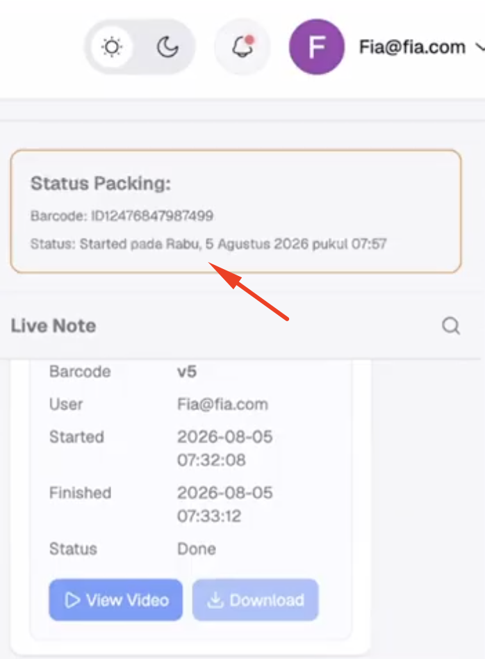
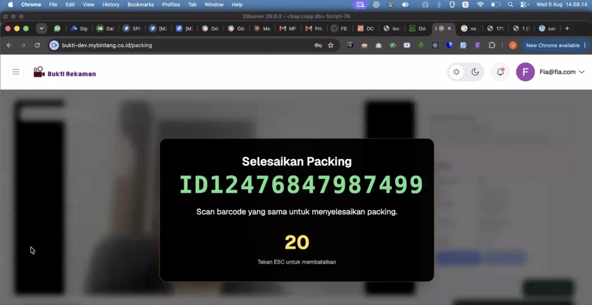
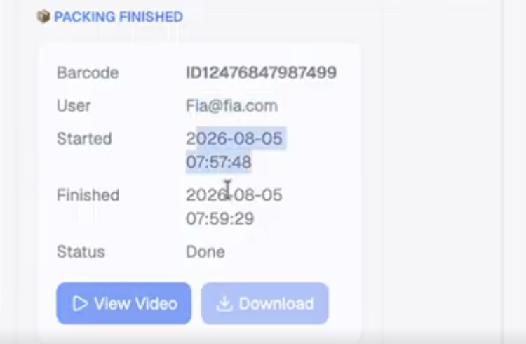
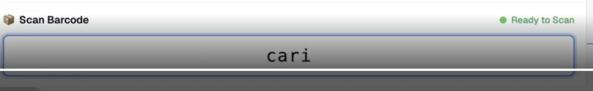
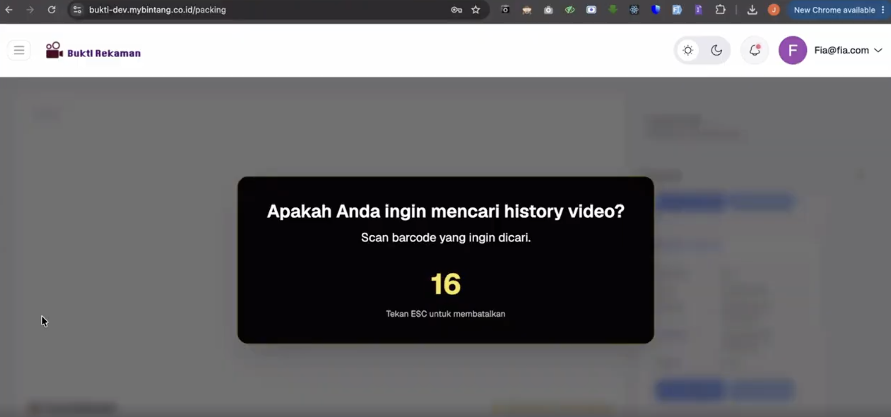
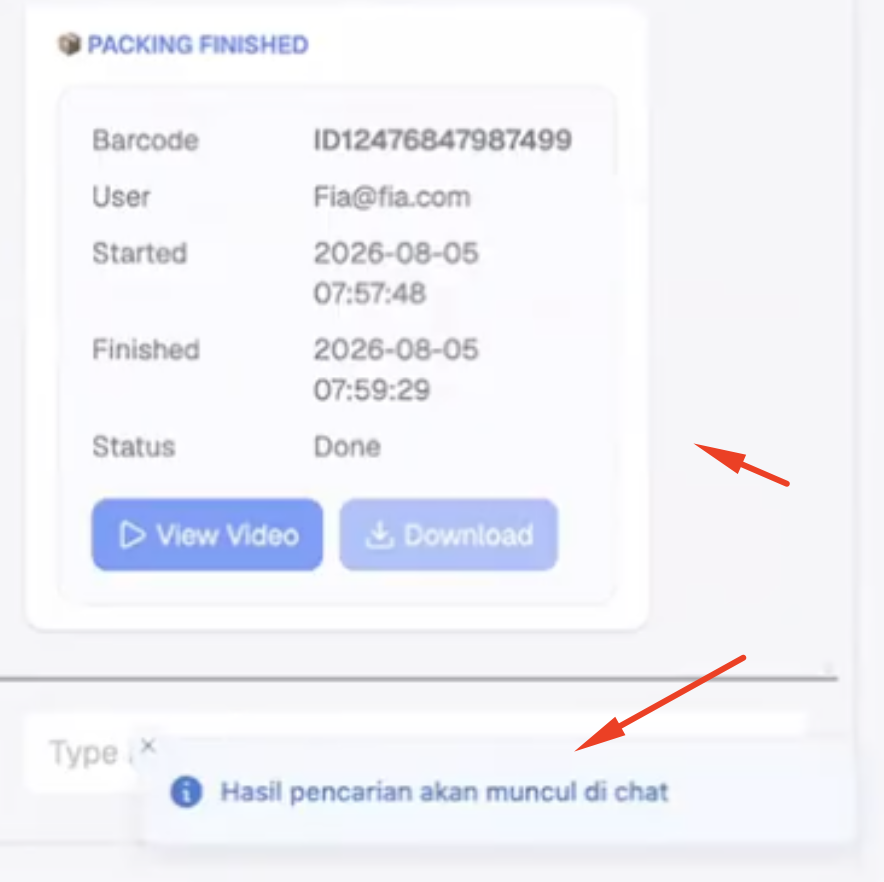

Panduan Penggunaan Fitur Bukti Rekaman
Ringkasan Fitur:
Bukti Rekaman Proses Packing Fitur Bukti Rekaman dirancang untuk
mendukung operasional seller dan admin dalam mendokumentasikan
proses pengepakan (packing) barang. Fitur ini memungkinkan perekaman
otomatis saat seller melakukan input atau scan barcode barang.
Rekaman video tersimpan secara terstruktur dalam sistem, sehingga
memudahkan seller atau admin mencari video bukti packing historis
(baik 7 hari, 1 minggu, hingga 1 bulan yang lalu) secara cepat dan
presisi. Keberadaan bukti video ini krusial untuk memperkuat posisi
seller saat mengajukan banding atas klaim retur atau refund dari
pembeli.
Menyediakan bukti otentik proses pengepakan untuk kebutuhan klaim banding saat terjadi retur atau refund.
Memudahkan proses packing dengan merekam langsung video saat seller melakukan input/scan barcode barang.
Memungkinkan admin dan seller menemukan rekaman video transaksi masa lalu (7 hari, 1 minggu, hingga 1 bulan) hanya dengan melakukan pencarian berbasis resi/barcode.
Panduan Merekam Bukti Rekam
Panduan Merekam Bukti Rekam
1. Masukkan Resi Marketplace kedalam kolom "Scan Barcode"

2. Jika Sudah Dimasukkan No Resi tekan enter, maka nanti dipojok kanan atas statusnya started, pada status started itu menandakan rekaman sedang berjalan, jadi disini user melakukan packing hingga selesai packing

3. Setelah selesai proses packing, maka user diharuskan melakukan scan barcode lagi, jika sudah maka akan muncul pop berikut ketika muncul pop up dan proses packing selesai bisa scan lagi barcode nya untuk menghentikan rekaman
Catatan : Ketika Start (Mulai Rekam) itu scan 1x, dan jika rekaman ingin diselesaikan itu scan 2x, yaitu satunya untuk konfirmasi.

4. Ketika sudah selesai rekam, akan muncul pesan atau catatan, jika ingin mendownload bisa klik Download, jika ingin melihat hasilnya/preview itu bisa tekan button View Video

Mencari History Rekaman Packing
Mencari History Rekaman Packing
1. Ketik "Cari" pada kolom scan barcode

2. Akan muncul pop Apakah anda ingin mencari history video? jika iya bisa scan barcode/resi nya

3. Hasil Pencarian akan muncul seperti gambar di bawah ini
